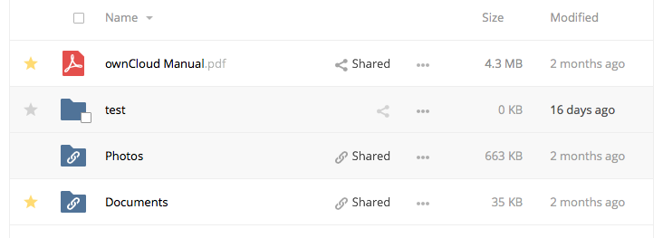
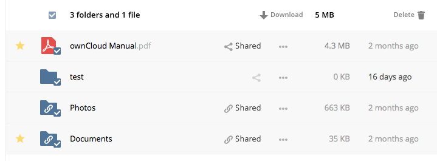
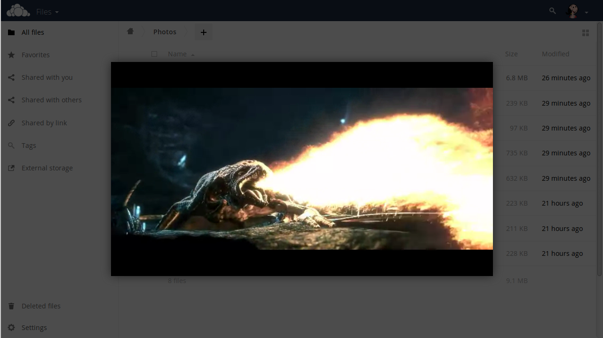

Navigating the WebUI¶
Navigating through folders in ownCloud is as simple as clicking on a folder to open it and using the back button on your browser to move to a previous level. This section walks you through how to navigate the ownCloud UI.
Create and Upload Files and Directories¶
At the top of the Files view is a navigation bar. This contains links to uploading new files, and creating new files and folders.

To upload or create new files or folders directly in an ownCloud folder click on the New button in the navigation bar (this is the + button).
There, as in the image above, you can see links to:
- Upload a new file: This uploads files from your computer into ownCloud. You can also upload files by dragging and dropping them from your file manager.
- Create a new text file: This creates a new text file and adds the file to your current folder.
- Create a new folder: This creates a new folder in the current folder.
Select Files or Folders¶

You can select one or more files or folders by hovering over them (as in the image below) and clicking on their checkboxes. To select all files in the current directory, click on the checkbox located at the top of the files listing.

When you select multiple files, you can delete all of them, or download them as
a ZIP file by using the Delete or Download buttons that appear at the
top.
Note
If the Download button is not visible, the administrator has
disabled this feature.
Filter the Files View¶
The left sidebar on the Files page contains several filters for quickly sorting and managing your files.
| Option | Description |
|---|---|
| All files | The default view; displays all files that you have access to |
| Favorites | Files or folders marked with the yellow star |
| Shared with you | Displays all files shared with you by another user or group |
| Shared with others | Displays all files that you have shared with other users or groups |
| Shared by link | Displays all files that are shared by you via public link |
| External Storage | Files that you have access to on external storage devices and services such as Dropbox, Google, and Amazon S3 |
Move Files¶
You can move files and folders by dragging and dropping them into any directory.
Play Videos¶
You can play videos in ownCloud with the Video Player app, by clicking once on the file. Please note, video streaming by the native ownCloud video player depends on your Web browser and the video’s format.

Note
If your ownCloud administrator has enabled video streaming, and it doesn’t work in your Web browser, it may be a browser-related issue. See https://developer.mozilla.org/en-US/docs/Web/HTML/Supported_media_formats#Browser_compatibility for supported multimedia formats in Web browsers.
Settings¶
The Settings gear icon, in the lower left-hand corner of the ownCloud window, allows you to show or hide hidden files in your ownCloud Web interface.
These are also called dotfiles, because they are prefixed with a dot, e.g. .mailfile.
The dot tells your operating system to hide these files in your file browsers, unless you choose to display them. Usually, these are configuration files, so having the option to hide them reduces clutter.

Preview Files¶
ownCloud can display thumbnail previews for images, MP3 covers, and text files, if this is enabled by your server administrator. You can also display uncompressed text, OpenDocument, videos, and image files in the ownCloud embedded viewers by clicking on the file name. There may be other file types you can preview if your ownCloud administrator has enabled them. If ownCloud cannot display a file, it will start a download process and downloads the file to your computer.